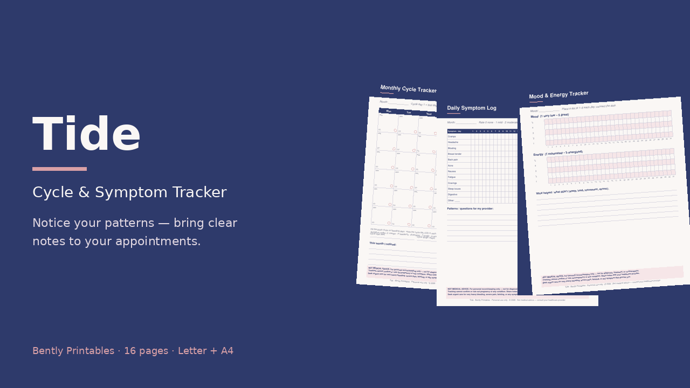

16 printable pages, Letter + A4
- Monthly cycle tracker calendar
- Flow intensity log · 31-day symptom grid
- Mood & energy tracker · cycle summary log
- Yearly overview · cycle profile · appointment prep
- Notes + 4 blank masters
Start free
Download the monthly cycle tracker, then grab the full pack.
Personal record-keeping only. Not medical advice, not for diagnosis or treatment, and not a contraceptive method. Consult your healthcare provider.